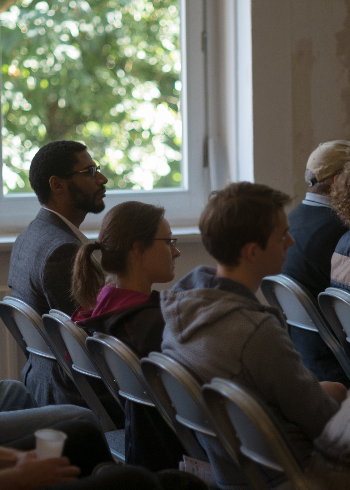
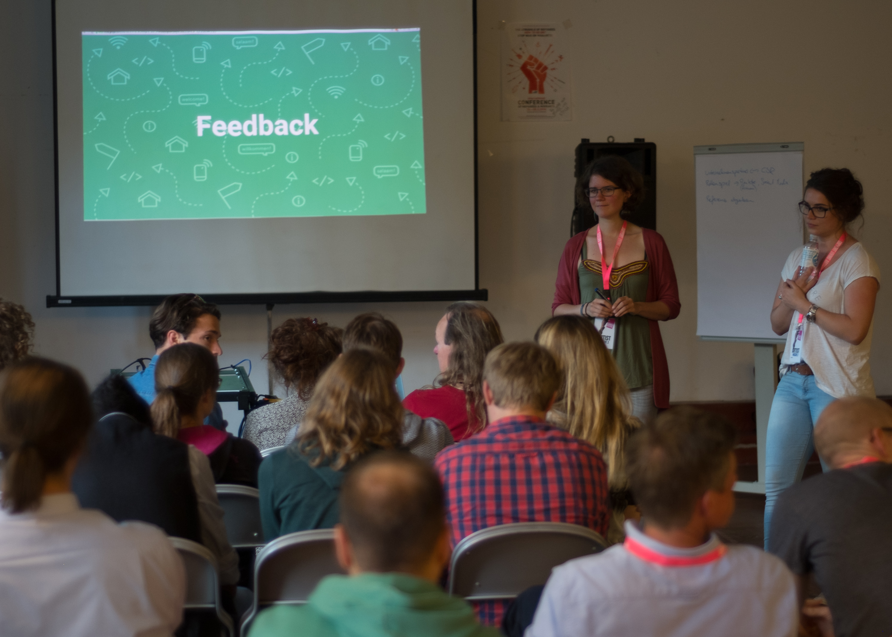

Wie kann Software dabei helfen, Sach- und Zeitspenden besser zu koordinieren? Wie kann neue Technologie dabei helfen den Asylprozess leichter zu verstehen? Wie kann die Kommunikation zwischen Geflüchteten und HelferInnen verbessert werden? - Diesen und weiteren Fragen haben wir uns im Rahmen der Digital Refugee Days gewidmet.
Bei den ‘Digital Refugee Days’ haben wir Menschen zusammengebracht, die in unterschiedlichen Kontexten mit Geflüchteten arbeiten oder selbst Geflüchtete sind. Wir wollten digitale Hilfsmittel und kreative Ansätze nutzen, um Hilfsorganisationen, Institutionen und Initiativen bei ihrer täglichen Arbeit und Geflüchtete in ihrem Alltag zu unterstützen. Dabei wollten wir das Rad nicht komplett neu erfinden, sondern auch auf vorhandene Projekte aufbauen und diese weiterentwickeln.
Unser Ziel ist es, die Zusammenarbeit zwischen technisch versierten Communities, Ehrenamtlichen im Bereich der Flüchtlingshilfe, Geflüchteten sowie öffentlichen Verwaltungen zu verstetigen und auszubauen. Zu unseren zwei Workshops haben wir UnterstützerInnen lokaler Flüchtlings-Initiativen, Geflüchtete, Mitarbeiter aus der städtischen Verwaltung sowie die Civic Tech Community eingeladen. In den Workshops haben wir das gegenseitige Kennenlernen untereinander und den Austausch von Erfahrungen und Problemen unterstützt. Wir haben gemeinsam spannende Problemstellungen identifiziert und konkrete Projektideen entwickelt. Im Fokus der Arbeit unsere Labs stand und steht ein nutzer- und problemorientiertes Vorgehen, d. h. wir versuchen die Anwendungen möglichst in enger Zusammenarbeit mit den späteren Nutzern zu entwickeln, um den Nutzen möglichst optimal auszuloten und anzupassen. Das ist natürlich manchmal schwieriger in der Praxis als in der Theorie ;)
Der Workshop-Auftakt fand am 22. Juni, einem ganz normalen Mittwoch Vormittag, statt. Die Hafen City Universität hatte uns einen Raum mit toller Sicht auf den Hafen zur Verfügung gestellt.
Mit rund 25 Teilnehmern aus verschiedenen Institutionen, Helferorganisationen, Behörde und Geflüchteten hatten wir ein bunte Mischung an Leuten, die genauso gespannt waren auf den Workshop-Tag wie wir.
Für unseren zweiten Workshop waren wir zu Gast beim Internationalen Sommerfestival auf Kampnagel. Da wir diesmal keinen ganzen Workshoptag zur Verfügung hatten, haben wir die Leute eingeladen mit uns über die Projekte aus dem ersten Workshop zu diskutieren und über ihre eigenen Erfahrungen zu dem Themenkomplex “Geflüchtete - Hilfsorganisationen - Webbasierte Lösungen” zu sprechen. Es war wieder eine bunte Mischung an Teilnehmern, um die 20 Leute. Unter anderem viele ehrenamtlich Engagierte in der Flüchtlingshilfe und Interessierte, die über das Kampnagel-Programmheft eher zufällig zu uns gefunden haben.
Als Grundlage der Diskussion haben wir die zwei erfolgreichsten (am ausgereiftesten) Projekte des ersten Workshops vorgestellt. Bei der Frage nach Feedback vom Publikum ist sofort eine lebhafte Diskussion entbrannt bei der wir ganz viele konstruktive Ideen erhalten haben und die Teilnehmer die Vor- und Nachteile von digitalen Lösungen in der Flüchtlingsthematik diskutiert haben. Beispielsweise war die Erfahrung, dass viele ältere Menschen sich engagieren, die aber eher schlecht per Internet zu erreichen sind. Eine andere Idee war, die Helfer-Plattform für Ehrenamtliche auch u. a. auf Arabisch und Farsi zu übersetzen, um Geflüchteten die Möglichkeit zu geben sich zu engagieren, z. B. solange sie noch keine Arbeitserlaubnis haben.
Unsere Diskussionsrunde war eigentlich viel zu schnell vorbei und wir haben sie in vielen angeregten Gesprächsgruppen gemütlich mit Wein und Snacks ausklingen lassen.
Gefördert wurde das Projekt durch die Bundeszentrale für Politische Bildung und initiiert durch die Open Knowledge Foundation Deutschland.
Außerdem bedanken wir uns herzlich bei der Hafencity Universität und Kampnagel für die tollen Räume in denen wir unserer Kreativität freien Lauf lassen konnten. Sowie Lemonaid, die uns beim ersten Workshop mit einer Ladung Limo erfrischt haben und Jan Brinkmann der das Ganze fotografisch ganz toll festgehalten hat! Nicht zu vergessen natürlich die fleißigen Helfer von Code for Hamburg :)
Wir sind eine Gruppe Ehrenamtlicher im Code for Hamburg Lab, das Teil des bundesweiten Code for Germany Netzwerkes ist. Code for Germany gehört zur Open Knowledge Foundation Deutschland und ist ein Netzwerk aus Ehrenamtlichen, die ihre Fähigkeiten im Bereich Softwareentwicklung, Design, Stadtplanung, Kommunikation uvm. für ihre Städte und Nachbarschaft einsetzen.
Projektverantwortliche: Alina, Vera, Timo und Solveig, mit ganz viel Unterstützung aus dem Code for Hamburg Team!
Weitere Infos zum Projekt 'Digital Refugee Labs' findet ihr unter:
codefor.de/digitalrefugeelabs Newsletter PDF DokumentBei Interesse schreib uns am besten hier:
lab@codeforhamburg.org